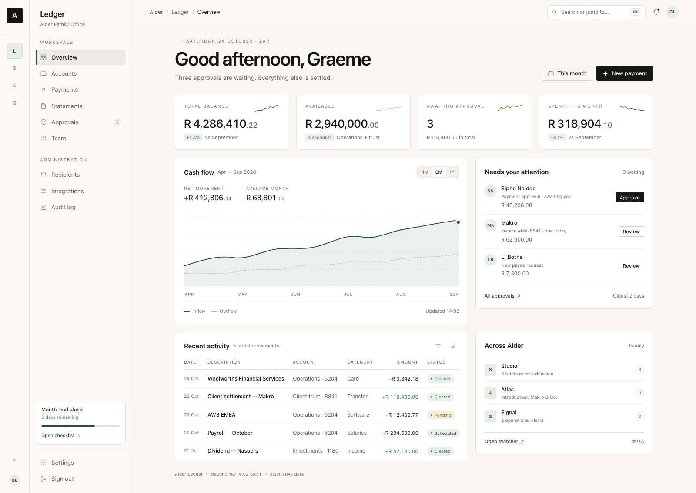
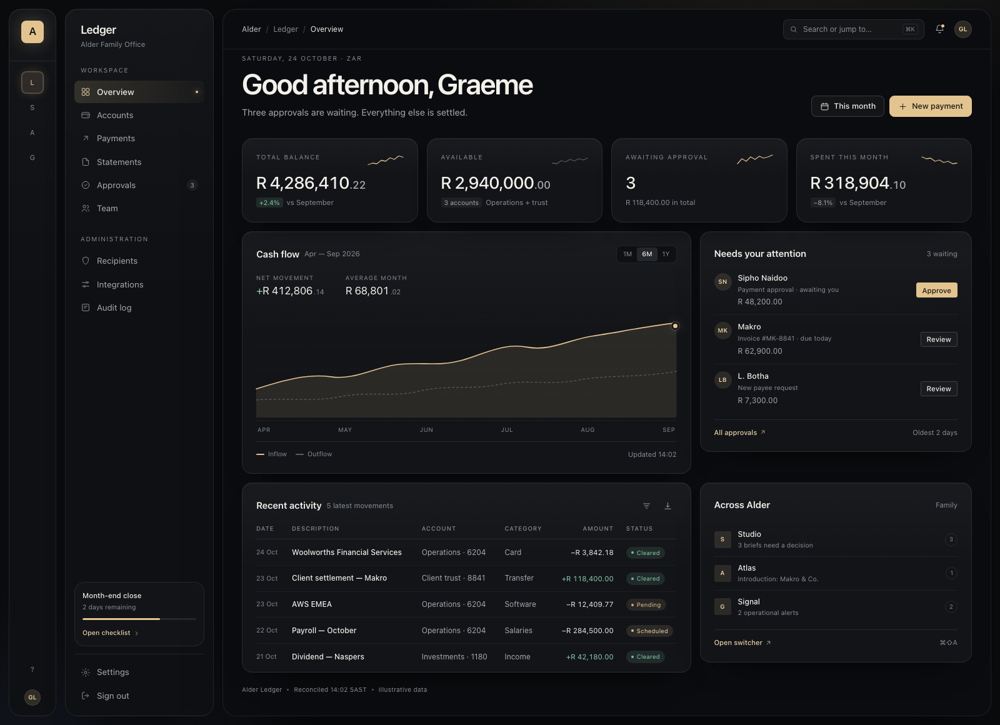
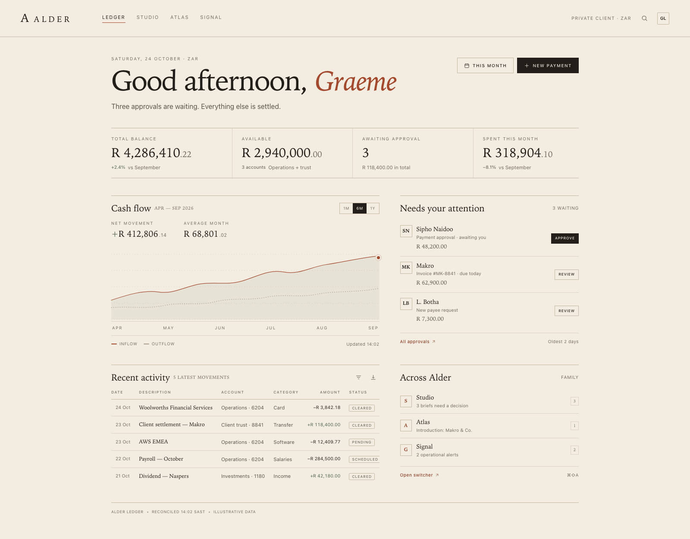
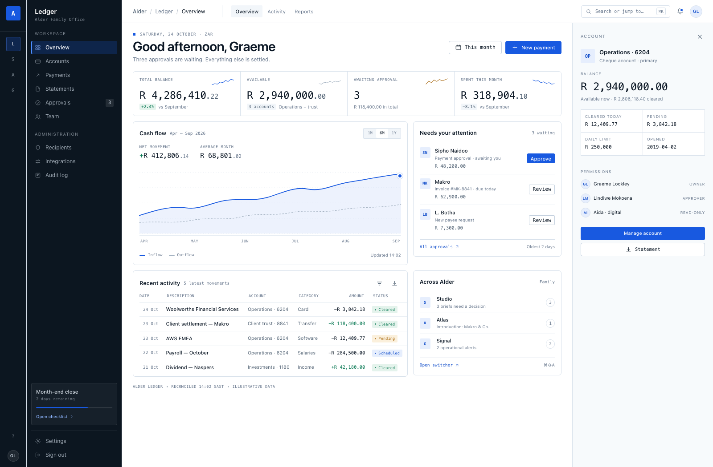

The same product — a family of applications sharing one account, one navigation model and one set of data — rendered in four different convictions about how it should feel. Quiet was chosen on 24 October 2026; the other three remain recorded alternatives. Each direction is a complete language, not a skin.

Private-bank restraint, with Apple's typographic calm.

The same confidence after hours. Light as an edge, not a shadow.

A private library, not a dashboard. Type does the ornament.

Cool light, graphite navigation, monospaced data. Built to be read fast.
Quiet is now the family language: light first, with a proper night mode that keeps the same green and inverts the primary action. The accent is shared across apps; identity is carried by the monogram. Folio’s editorial confidence can still inform brand surfaces, but it is not the product language.